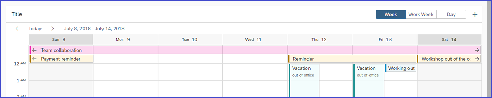
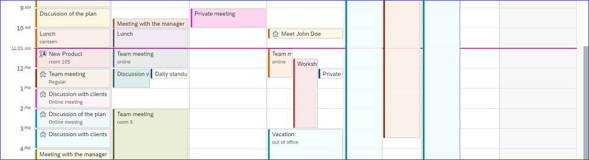

|
Enabling Applications to Comply with the Content Security Policy (CSP) The SAPUI5 framework now allows you to run applications in an
environment in which CSP has been enabled. Inline scripts are
not required anymore, but you must still allow
Note
An application needs to be prepared to the used policy to run in a CSP-enabled environment. |
|
The  SinglePlanningCalendar Header Area
 SinglePlanningCalendar MeetingsFor more information, see the API Reference and the Samples. |
| SAPUI5 OData V4 Model The new version of the SAPUI5 OData V4 model introduces the following features:
Note that we have introduced this change to support message processing.
Restriction
Due to the limited
feature scope of this version of the SAPUI5 OData V4 model, check that all required features are in place
before developing applications. Check the detailed documentation
of the features, as certain parts of a feature may be missing.
While we aim to be compatible with existing controls, some
controls might not work due to small incompatibilities compared
to |
|
|
sap.f.GridList layout to work with Microsoft
Internet Explorer 11. For more information, see the Sample. |
sap.m.Input control
now has autocomplete functionality which is enabled when the
showSuggestion Boolean property is set to
true (default). As the user types in the input
field, the first matching item from the suggestions list gets
highlighted. Matching text is based on the beginning of the first
word entered in the input field. An autocompleted value can be
accepted by pressing Enter. For more information, see the API Reference and the
Samples. |
displayOnly
property is set to true. The new color results in
#666 for the Belize theme and #ddd for the Belize Deep theme. With
this change, the color contrast ratio returns to the standard
requirement, and the displayOnly label is visually
indistinguishable from the normal label. For more information, see the API Reference and the
Samples. |
sap.m.ObjectHeader control now supports
circle-shaped images with the use of the new
imageShape property. For more information, see the API Reference and the
Samples. |
|
The |
|
We have enabled the controls to be a droppable area. For more information, see Drag and Drop. |
|
The |
|
The control now supports the
|
|
To make descriptions more readable, column widths are now
automatically adjusted for text arrangements of type
|
|
|
The |
|
|
List Report and Object Page The list report has these new features:
Overview Page The overview page has these new features or enhancements:
|
|
Demo Apps/Tutorials We have adapted all demo apps and tutorials to the latest UI5 evolution recommendations and concepts, including:
|
|
New Quick Start Tutorial We have replaced the Hello World! tutorial with a new Quick Start tutorial that showcases the key features of SAPUI5 in three simple steps. For more information, see Quick Start. |
|
Tools Page We have updated the Tools page and added two more blocks about the Support Assistant tool and resources for the alpha release of the UI5 Build and Development Tooling. For more information, visit the Tools section in Demo Kit. |